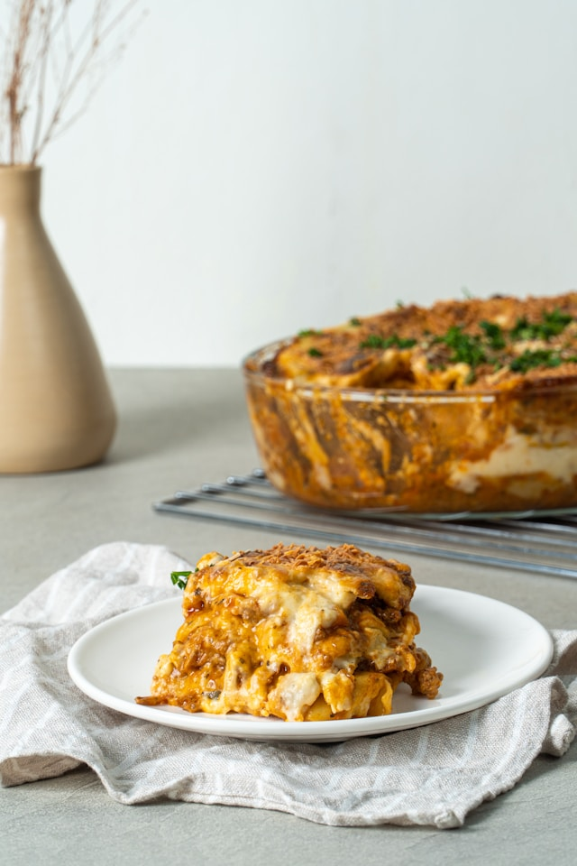

Home
Lasagna

Description
This meaty lasagna has onion, cloves of garlic, tomatoes, and more
in this recipe. With this easy to make lasagna recipe you will be
sure to win over your guests!
Ingredients
- 1 pound sweet Italian sausage
- 3/4 pound lean ground beef
- 1/2 cup minced onion
- 2 cloves of garlic, crushed
- 1 (28 oz) can crushed tomatoes
- 2 (6.5 oz) cans tomato sauce
- 2 (6 oz) cans tomato paste
- 1/2 cup water
- 2 tablespoons white sugar
- 4 tablespoons chopped fresh parsley, divided
- 1 1/2 teaspoons dried basil leaves
- 1 1/2 teaspoons salt, dvided, or to taste
- 1 teaspoon Italian seasoning
- 1/2 teaspoon fennel seeds
- 1/4 teaspoon black pepper
- 12 lasagna noodles
- 3/4 cup grated Parmesan cheese
- 3/4 pound mozzarella cheese, sliced
- 16 oz ricotta cheese
- 1 egg
Steps
- Gather all your ingredients
- Cook sausage, ground beef, onion, and garlic in a Dutch oven
over medium heat until well browned.
- Stir in crushed tomatoes, tomato sauce, tomato paste, and water.
Season with sugar, 2 tablespoons parsley, basil, 1 teaspoon salt,
Italian seasoning, fennel seeds, and pepper. Simmer, covered, for
about 1 ½ hours, stirring occasionally.
- Bring a large pot of lightly salted water to a boil. Cook lasagna
noodles in boiling water for 8 to 10 minutes. Drain noodles, and
rinse with cold water.
- In a mixing bowl, combine ricotta cheese with egg, remaining 2
tablespoons parsley, and 1/2 teaspoon salt.
- Preheat the oven to 375 degrees F (190 degrees C).
- To assemble, spread 1 ½ cups of meat sauce in the bottom of a
9x13-inch baking dish. Arrange 6 noodles lengthwise over meat
sauce, overlapping slightly. Spread with 1/2 of the ricotta
cheese mixture. Top with 1/3 of the mozzarella cheese slices.
Spoon 1 ½ cups meat sauce over mozzarella, and sprinkle with
1/4 cup Parmesan cheese.
- Repeat layers, and top with remaining mozzarella and Parmesan
cheese. Cover with foil: to prevent sticking, either spray foil
with cooking spray or make sure the foil does not touch the cheese.
- Bake in the preheated oven for 25 minutes. Remove the foil and
bake for an additional 25 minutes.
- Rest lasagna for 15 minutes before serving.